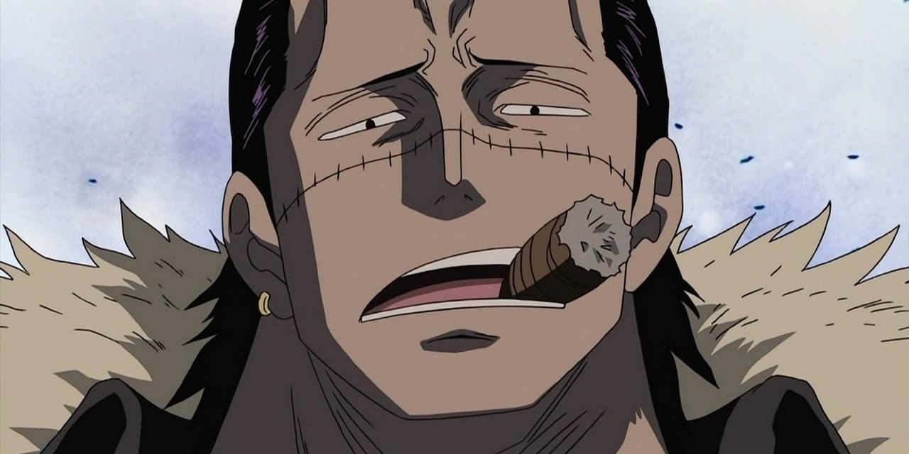
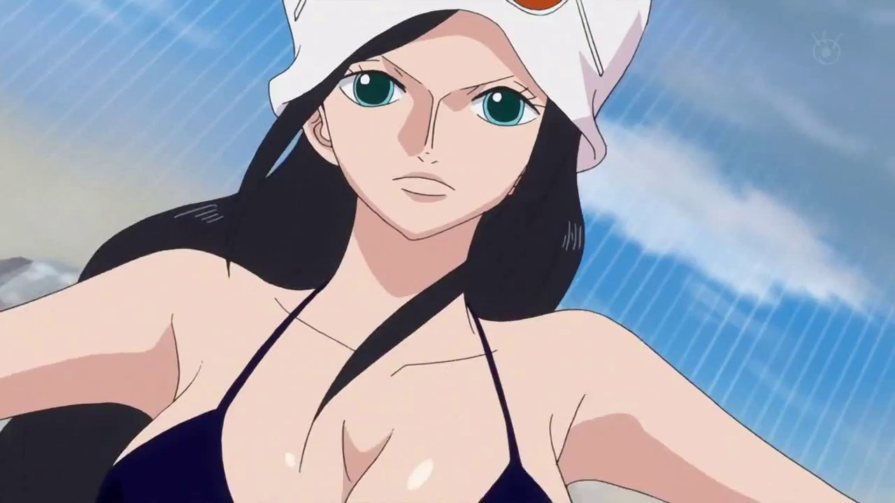

Gol D. Roger, conhecido pela maioria como Gold Roger, foi um lendário pirata que ficou
conhecido como Rei dos Piratas, Capitão dos Piratas do Roger, e proprietário do lendário tesouro
conhecido como "One Piece". Ele também foi o amante de Portgas D. Rouge e pai biológico de
Portgas D. Ace.
Roger era famoso como o homem que fazia o que ninguém achava possível - conquistar a Grand Line e
acumulando uma vasta fortuna, mas sabia que logo morreria por uma doença incurável. Ele se desfez de
sua equipe antes de se entregar para ser executado. O Governo Mundial pretendia que Roger fosse
executado publicamente para desencorajar a pirataria, mas suas últimas palavras tiveram o impacto
oposto. Ele afirmou que qualquer um que pudesse encontrar seu tesouro, poderia ficar com ele.
Monkey D. Luffy
Imagem referente ao capitão dos Chapéus de palha, Monkey D. Luffy.
Monkey D. Luffy, também conhecido como "Luffy do Chapéu de Palha" e comumente como "Chapéu de
Palha", é o fundador e capitão dos cada vez mais infames e poderosos Piratas do Chapéu de Palha,
bem como o mais poderoso de seus melhores lutadores. Ele deseja encontrar o tesouro lendário
deixado para trás pelo falecido Gol D. Roger e assim se tornar o Rei dos Piratas, o que ajudaria
a facilitar um sonho desconhecido dele que ele contou apenas para Shanks, seus irmãos e
tripulação. Ele acredita que ser o Rei dos Piratas significa ter a maior liberdade do
mundo.
Nascido na Vila Foosha, Luffy acidentalmente comeu a Gomu Gomu no Mi aos 7 anos de idade, que deu ao
seu corpo propriedades de borracha. Nesta época, Luffy conheceu Shanks, "o Ruivo", que lhe deu
seu chapéu de palha como parte de uma promessa para que eles se encontrassem novamente. Luffy é o
filho do líder Revolucionário Monkey D. Dragon, neto paterno do herói da Marinha Monkey D.
Garp, irmão jurado do falecido "Punhos de Fogo" Portgas D. Ace e do chefe de gabinete
Revolucionário Sabo, e filho adotivo de Curly Dadan. Ele é uma das poucas pessoas no mundo que
carregam a Vontade de D.
Luffy enfrentou inúmeras forças globais que encontrou, começando contra os piratas mais poderosos do
East Blue e avançando para confrontos contra a Marinha, os Shichibukai, a Cipher Pol, Nobres
Mundiais e até mesmo os Yonkou, emergindo vitorioso na maior parte destes confrontos. Ele invadiu e
indiretamente causou a destruição de Enies Lobby, escapou e causou uma fuga em massa em Impel Down,
e foi uma figura central na Guerra de Marineford. Ele derrotou ou fez amizade com sete dos onze
antigos Shichibukai, antes da dissolução da organização, e invadiu o território de dois Yonkou. As
realizações e a herança familiar de Luffy fizeram com que ele fosse rotulado como um "Futuro
Elemento Perigoso", enquanto ganhava a reputação de ser "imprudente" e, em alguns casos, "insano",
ganhando a ira do Almirante da Frota Sakazuki, do Quartel-General da Marinha e até mesmo do Governo
Mundial.
Luffy também tem uma propensão para atrair seguidores e, sem intenção, foi nomeado líder da Grande
Frota do Chapéu de Palha, composta por sete tripulações piratas que juraram vir em seu auxílio
sempre que ele desejasse. Depois de saber disso e de suas façanhas contra os Piratas da Big Mom, a
imprensa rotulou Luffy como o "Quinto Imperador do Mar", embora muitas figuras proeminentes
considerem isso um exagero. No entanto, após derrotar Kaidou no Arco País de Wano, Luffy foi
oficialmente declarado Imperador pelo Governo Mundial, ao lado de Buggy, ambos ocupando os postos
deixados por Kaidou e Big Mom.
Tendo tido uma recompensa de
300.000.000 antes de chegar ao Arquipélago de Sabaody, Luffy foi
um dos onze "Supernovas", piratas que simultaneamente alcançaram a Red Line com recompensas acima de
100.000.000 pouco antes da Guerra de Marineford. Ele, os outros dez Supernovas e Marshall
D. Teach foram posteriormente referidos como a "Pior Geração". Eventualmente, suas conquistas e
reputação contribuíram para sua atual recompensa de
3.000.000.000.
Durante o confronto contra Kaidou, Rei das Feras, em Onigashima, foi revelado que a fruta de Luffy é
uma Zoan Mítica, a Hito Hito no Mi Modelo: Nika, dando seu corpo propriedades de borracha e
liberdade apenas limitada por sua imaginação. As capacidades novas desta fruta ainda são
desconhecidas.
Shanks
Imagem referente a Shanks o Ruivo.
Shanks, "o Ruivo", comumente conhecido apenas como "Ruivo", é o chefe dos Piratas do
Ruivo e um dos Quatro Imperadores que governam o Novo Mundo.
Navegando com os infames Piratas do Roger desde criança, Shanks começaria sua carreira de pirata em
seu navio como um aprendiz ao lado de Buggy, antes de formar sua própria tripulação depois da morte
de Roger.
Doze anos atrás, enquanto estava em East Blue, Shanks inspirou o jovem garoto da aldeia, Monkey D.
Luffy a seguir sua própria jornada pirata, sendo assim o responsável pelo garoto se tornar o
notório fora-da-lei que ele é hoje. Ele também acidentalmente forneceu a Luffy a Gomu Gomu no Mi
para comer, e até sacrificou seu braço esquerdo para salvar o menino de ser comido pelo Senhor
da Costa no mar. Mais notavelmente, ele também possuía o chapéu de palha que pertenceu ao próprio
Gol D. Roger e se tornou o acessório exclusivo de Luffy, tendo-o presenteado ao menino como parte de
uma promessa de que eles se encontrariam novamente algum dia.
Roronoa Zoro
Imagem referente ao Imediato dos Chapéus de palha, Roronoa Zoro.
Roronoa Zoro, também conhecido como "Caçador de Piratas" Zoro, é o combatente dos Piratas do
Chapéu de Palha e um ex-caçador de recompensas.
Ele foi o primeiro membro a juntar-se à tripulação. Sua fama como mestre espadachim e sua grande
força, juntamente com as ações de seu capitão, às vezes levaram os outros a acreditar que ele era o
verdadeiro capitão da tripulação antes deste obter sua primeira recompensa, enquanto algumas pessoas
acreditam que ele seja o imediato.
Ele é um dos quatro melhores lutadores da tripulação, ao lado de Luffy, Sanji e Jinbe, e seu sonho é
se tornar o maior espadachim do mundo. Zoro também é considerado como um dos doze piratas que
são referidos como "A Pior Geração". Ele atualmente tem uma recompensa de
1.111.000.000.
Usopp
Imagem referente ao atirador dos Chapéus de palha, Usopp.
Usopp é o Atirador dos Piratas do Chapéu de Palha. Ele é o quarto membro da tripulação e o terceiro
a entrar, fazendo isso no final do Arco Vila Syrup. Embora ele tenha deixado a tripulação durante o
Arco Water 7, ele se juntou novamente ao final do Arco Pós-Enies Lobby.
Usopp é o filho de Yasopp e Banchina. Ele nasceu e foi criado na Vila Syrup, e era o "capitão" dos
Piratas Usopp e o amigo mais próximo de Kaya. Após colaborar com os Chapéus de Palha para derrotar
Kuro e os Piratas do Gato Preto, ele foi convidado a se juntar à tripulação. Apesar de sua covardia
normal, Usopp sonha em se tornar um corajoso guerreiro do mar como seu pai, e vive todos os dias em
busca de viver à altura deste sonho.
Ele tem atualmente uma recompensa de
l500.000.000. Usopp recebe o posto de 5° Comandante
(seguindo a lógica de sua recompensa) já que a marinha o nomeou um dos comandantes do Luffy.
Sanji
Imagem referente ao cozinheiro dos Chapéus de palha, Sanji.
"Perna Preta" Sanji, nascido como Vinsmoke Sanji, e também é o cozinheiro dos Piratas
do Chapéu de Palha, assim como um antigo chefe de cozinha do Baratie. Ele também é o terceiro filho
e a quarta criança da Família Vinsmoke, tornando-o um príncipe do Reino Germa, até que ele
oficialmente os renunciou duas vezes. Apesar de Sanji renunciar ao seu sobrenome Vinsmoke, o
Governo Mundial o rotula como parte de seu nome em seu pôster de procurado.
Ele é oficialmente o quinto membro da tripulação e o quarto a se juntar, fazendo isso no final do
Arco Baratie. Uma vez que ele nasceu no North Blue, ele é o primeiro Chapéu de Palha a não se
originar do East Blue.
Ele é um dos quatro melhores lutadores da tripulação, ao lado de Luffy, Zoro e Jinbe. Seu sonho é
encontrar o paraíso dos chefes, All Blue, sendo esse o lugar onde o East Blue, o West Blue, o North
Blue e o South Blue se encontram, juntamente com sua vida selvagem. Devido aos eventos na Ilha Whole
Cake, sua recompensa atual é de
1.032.000.000, dando-lhe a quarta maior recompensa na
tripulação, ficando atrás apenas de Luffy, Zoro e Jinbe.[28]
Nami
Imagem referente a navegadora dos Chapéus de palha, Nami.
Nami, a "Gata Ladra" é a navegadora dos Piratas do Chapéu de Palha e uma dos Oficiais Seniores
da Grande Frota do Chapéu de Palha. Ela é o terceiro membro da tripulação e a segunda a entrar,
fazendo isso durante o Arco Orange Town. Ela é irmã adotiva de Nojiko depois que os dois ficaram
órfãos e foram acolhidos por Bell-mère.
Ela era anteriormente um membro dos Piratas do Arlong e inicialmente se juntou aos Chapéus de Palha
para poder roubá-los e comprar de volta a sua aldeia de Arlong. No entanto, ela se juntou
legitimamente aos Chapéus de Palha depois que eles se rebelaram e derrotaram Arlong. Seu sonho é
fazer um mapa de todo o mundo.
Ela primeiro ganhou uma recompensa de
16.000.000 após a invasão em Enies Lobby.
Posteriormente, aumentou para
66.000.000 após o Arco Dressrosa. Após o Ataque à Onigashima,
sua recompensa foi aumentada para
366,000,000.
Smoker
Imagem referente ao Vice-Almirante Smoker.
Smoker, o Caçador Branco é um oficial da Marinha estacionado na base G-5. Ele foi introduzido pela
primeira vez como um capitão (大佐, Taisa) em Loguetown, onde ele fez de sua missão de vida capturar
Luffy e jogá-lo numa prisão, e mais tarde foi promovido ao cargo de comodoro, devido aos
eventos em Alabasta. Em algum ponto durante o timeskip, ele foi promovido ao cargo de
Vice-Almirante. Ele também é, desde sua estreia, o superior de Tashigi, também servindo como seu
mentor.
Ele é um adversário recorrente de Luffy. Devido às suas ações contra Luffy em Loguetown, Smoker pode
ser considerado o principal antagonista do Arco Loguetown, e atua como um antagonista menor durante
o Arco Marineford. Apesar de sua rivalidade com Luffy, por razões de encontrar inimigos em comum,
eles acabaram se ajudando durante o Arco Alabasta, e formando uma aliança temporária durante o Arco
Punk Hazard, retornando após ambos os eventos para seu relacionamento como inimigos.
Crocodile

Imagem referente ao ex-Shichibukai Crocodile.
O "Rei do Deserto" Sir Crocodile é o ex-presidente da misteriosa organização criminosa
Baroque Works, anteriormente operando sob o codinome de "Mr. 0", com Nico Robin, anteriormente
conhecida como "Miss All Sunday", atuando como sua vice-presidente e braço direito (ela seria o
equivalente a uma imediata). Ele é o principal antagonista do Arco Alabasta e da Saga Alabasta em
geral, e um personagem coadjuvante no Arco Impel Down e no Arco Marineford.
Ele é um dos primeiros adversários mais antigos e notáveis da série, já que foi o primeiro inimigo
a entregar a Luffy uma derrota completa e absoluta. Ele foi originalmente apresentado como um dos
Shichibukai, mas mais tarde seu título foi destituído após uma tentativa fracassada para assumir
o controle do Reino de Alabasta e foi preso na lendária prisão Impel Down; sendo colocado no
Nível 6.
Crocodile foi libertado por Luffy de Impel Down em troca de ajudar no resgate de seu irmão e foi
para Marineford para participar da Guerra ao lado de Luffy e os Piratas do Barba Branca. Após a
guerra, ele e seu subordinado Daz Bonez decidiram ir para o Novo Mundo, onde Crocodile
estabeleceria a Cross Guild ao lado de seu ex-colega Shichibukai Dracule Mihawk, com outro
ex-Shichibukai e atual membro dos Quatro Imperadores, Buggy, atuando como figura de proa da
organização.
Tony Tony Chopper
Imagem referente ao medico dos Chapéus de palha, Chopper..
Tony Tony Chopper é uma rena. Ele é o médico da tripulação dos Piratas do Chapéu de Palha. Chopper é
uma rena que, após comer a Hito Hito no Mi, adquiriu a habilidade de se transformar e raciocinar
como os humanos. Ele é o sexto membro e um dos poucos membros da tripulação que nasceu na Grand
Line, numa ilha chamada Drum. Por ter sido confundido como mascote, a recompensa atual de sua
captura é de apenas
1.000. Mesmo sendo considerado "Mascote" pela marinha, ele foi nomeado
um dos comandantes do Luffy, sendo assim seguindo a lógica da sua recompensa o 9° Comandante.
Nico Robin

Imagem referente a arqueóloga dos chapéus de palha, Nico Robin.
Nico Robin, também conhecida como "Criança Demônio" e "Luz da Revolução", é a arqueóloga dos
Piratas do Chapéu de Palha. Ela é a única sobrevivente da ilha destruída de Ohara, localizada no
West Blue. Como resultado, ela é atualmente a única pessoa no mundo com a capacidade de ler e
decifrar Poneglyphs, uma habilidade que é considerada proibida e que ameaça o Governo Mundial.
Ela foi introduzida pela primeira vez como o vice-presidente da Baroque Works e antagonista
secundária da Saga Alabasta, conhecida como Miss All Sunday, antes de se juntar aos Chapéus de
Palha. Ela é a sétima integrante da tripulação, a sexta a se unir e, como Nami, é a segunda a
reentrar, chegando perto do final do Arco Enies Lobby. Robin também é o primeiro membro a ter sido
um antagonista. Ela comeu a Hana Hana no Mi.
Durante o Arco Pós-Guerra, ela se envolveu com os revolucionários por dois anos. Seu sonho é
encontrar o Rio Poneglyph, que conta a verdadeira história. Ela detém atualmente uma recompensa de
930.000.000.